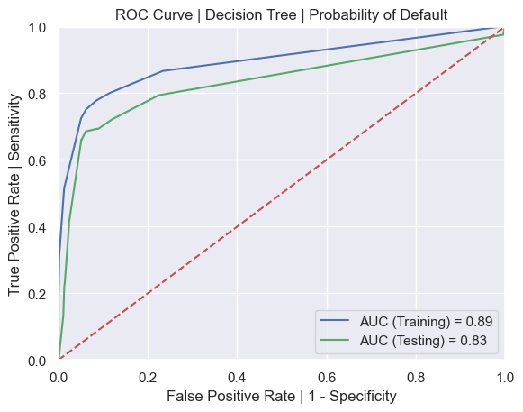
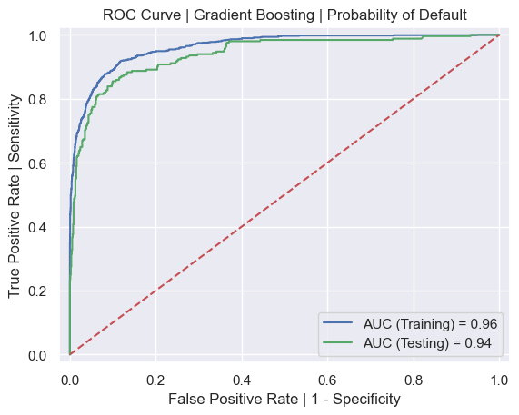
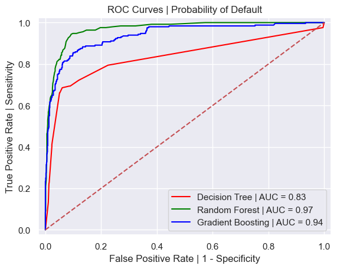

MSDS 422: Machine Learning
Author: Stefan Jenss
Instructor: Donald Wedding, PhD
Date: January 28th, 2023
Splitting the Data
Ouput:
FLAG DATA
TRAINING = (4768, 32)
TESTING = (1192, 32)
Handling of Outliers
For the handling of outliers for these models, we will consider outliers to be entries with a TARGET_LOSS_AMT value greater than $60,000.
Description of Test & Training Data (Pre-Outlier-Handing):
| TRAINING | TARGET_BAD_FLAG | TARGET_LOSS_AMT | TEST | TARGET_BAD_FLAG | TARGET_LOSS_AMT |
|---|---|---|---|---|---|
| count | 941.0 | 941.000000 | count | 248.0 | 248.000000 |
| mean | 1.0 | 13421.645058 | mean | 1.0 | 13387.758065 |
| std | 0.0 | 10662.481428 | std | 0.0 | 11508.703991 |
| min | 1.0 | 224.000000 | min | 1.0 | 320.000000 |
| 25% | 1.0 | 5817.000000 | 25% | 1.0 | 5214.500000 |
| 50% | 1.0 | 10959.000000 | 50% | 1.0 | 11336.500000 |
| 75% | 1.0 | 17635.000000 | 75% | 1.0 | 16734.000000 |
| max | 1.0 | 73946.000000 | max | 1.0 | 78987.000000 |
Description of the Test & Training Data (Post-Outlier-Handling):
| TRAINING | TARGET_BAD_FLAG | TARGET_LOSS_AMT | TEST | TARGET_BAD_FLAG | TARGET_LOSS_AMT |
|---|---|---|---|---|---|
| count | 941.0 | 941.000000 | count | 248.0 | 248.000000 |
| mean | 1.0 | 13400.475027 | mean | 1.0 | 13264.209677 |
| std | 0.0 | 10558.757161 | std | 0.0 | 10902.351601 |
| min | 1.0 | 224.000000 | min | 1.0 | 320.000000 |
| 25% | 1.0 | 5817.000000 | 25% | 1.0 | 5214.500000 |
| 50% | 1.0 | 10959.000000 | 50% | 1.0 | 11336.500000 |
| 75% | 1.0 | 17635.000000 | 75% | 1.0 | 16734.000000 |
| max | 1.0 | 60000.000000 | max | 1.0 | 60000.000000 |
Evaluate the accuracy of the model on both the training and test data set:
Test a variety of max_depth's to determine the best value to use.
Decision Tree | Probability of Default
| Max Depth | Accuracy (Training) | Accuracy (Testing) |
|---|---|---|
| 3 | 0.8873741610738255 | 0.8825503355704698 |
| 4 | 0.8928271812080537 | 0.8859060402684564 |
| 5 | 0.8978607382550335 | 0.8875838926174496 |
| 6 | 0.9054110738255033 | 0.8901006711409396 |
| 7 | 0.9081375838926175 | 0.8884228187919463 |
| 8 | 0.915268456375839 | 0.889261744966443 |
A max_depth of 6 appears to be the best, so we will use this for our model.
ROC Curve for Probability of Default Decision Tree Model:

Decision Three Visualization (using Graphviz):
Variables Included in Decision Tree to Predict Loan Default:
Evaluate RMSE for Training and Test Data Sets
Test a variety of max_depth's to determine the best value to use.
Decision Tree | Amount Lost Assuming Loan Default
| Max Depth | TREE RMSE Train | TREE RMSE Test | RMSE Ratio |
|---|---|---|---|
| 3 | 5400.190276378008 | 6530.612338895066 | 1.2093300429545697 |
| 4 | 4376.115301768929 | 5300.687819418662 | 1.2112770011512262 |
| 5 | 3526.247152892591 | 4445.532172751522 | 1.2606978410758414 |
| 6 | 2635.7179394222653 | 4212.97475780228 | 1.598416391522433 |
| 7 | 2024.466140124873 | 4336.092613302751 | 2.141844967105892 |
A max_depth of 6 appears to be the best, so we will use this for our model.
Decision Three Visualization (using Graphviz):

Variables Included in Decision Tree to Predict Loss Amount Assuming Default:
Evaluate the accuracy of the Random Forest model on both the training and test data set:
| Random Forest | Probability of Default |
|---|---|
| Accuracy (Training) | 1.0 |
| Accuracy (Testing) | 0.9177852348993288 |
Graph of the ROC Curves for the Training and Test Data Set for the Random Forest model:

List of Important Variables Included in the Random Forest Model to Predict Loan Default:
| Variable | Importance Score |
|---|---|
| M_DEBTINC | 100 |
| IMP_DEBTINC | 61 |
| IMP_CLAGE | 42 |
| IMP_DELINQ | 41 |
| IMP_LOAN | 37 |
| IMP_VALUE | 36 |
| IMP_MORTDUE | 33 |
| IMP_CLNO | 32 |
| IMP_YOJ | 28 |
| IMP_DEROG | 24 |
| IMP_NINQ | 20 |
| M_VALUE | 17 |
Evaluate the RMSE for both the training data set and the test data set:
| Random Forest | Loss Amount |
|---|---|
| RMSE (Training) | 1215.1036374284365 |
| RMSE (Testing) | 2725.840164535692 |
Important Variables Included in the Random Forest Model to Predict Loss Amount:
| Variable | Importance Score |
|---|---|
| IMP_LOAN | 100 |
| IMP_CLNO | 13 |
| M_DEBTINC | 5 |
Evaluate the Accuracy of the Model on Both Training and Test Data Sets:
| Gradient Boosting | Probability of Default |
|---|---|
| Accuracy (Training) | 0.9259647651006712 |
| Accuracy (Testing) | 0.9068791946308725 |
Graph of the ROC Curves for the Training and Test Data Sets for the Gradient Boosting Model:

Important Variables Included in the Gradient Boosting Model to Predict Loan Default:
| Variable | Importance Score |
|---|---|
| M_DEBTINC | 100 |
| IMP_DEBTINC | 30 |
| IMP_DELINQ | 19 |
| IMP_CLAGE | 13 |
| M_VALUE | 7 |
| IMP_DEROG | 7 |
Evaluate the RMSE for Both the Training and Test Data Sets:
| Gradient Boosting | Loss Amount |
|---|---|
| RMSE (Training) | 1216.8745387135345 |
| RMSE (Testing) | 2272.6913845727468 |
Important Variables Included in the Gradient Boosting Model to Predict Loss Amount:
| Variable | Importance Score |
|---|---|
| IMP_LOAN | 100 |
| IMP_CLNO | 15 |
| M_DEBTINC | 6 |
Complete ROC Curve for the Decision Tree, Random Forest, and Gradient Boosting Models Using the Test Data Set: 
Complete List of Root Mean Squared Error (RMSE) Averages for Predicted Loss Amount Assuming Default:
| RMSE Values | Loss Amount |
|---|---|
| Decision Tree | 4212.97475780228 |
| Random Forest | 2725.840164535692 |
| Gradient Boosting | 2272.6913845727468 |
Comparison of the Frequency of Appearance of the Important Variables for Probability of Default:
Important Variables | Probability of Default
| Model | Important Variables |
|---|---|
| Vars_TREE | ['M_VALUE', 'IMP_VALUE', 'IMP_LOAN', 'M_DEBTINC', 'IMP_DEBTINC', 'IMP_MORTDUE', 'M_YOJ', 'IMP_YOJ', 'M_DEROG', 'IMP_DEROG', 'IMP_DELINQ', 'M_CLAGE', 'IMP_CLAGE', 'IMP_CLNO', 'z_IMP_JOB_Sales'] |
| Vars_RF | ['M_DEBTINC', 'IMP_DEBTINC', 'IMP_CLAGE', 'IMP_DELINQ', 'IMP_LOAN', 'IMP_VALUE', 'IMP_MORTDUE', 'IMP_CLNO', 'IMP_YOJ', 'IMP_DEROG', 'IMP_NINQ', 'M_VALUE'] |
| Vars_GB_flag | [('M_DEBTINC', 100), ('IMP_DEBTINC', 30), ('IMP_DELINQ', 19), ('IMP_CLAGE', 13), ('M_VALUE', 7), ('IMP_DEROG', 7)] |
| Variable | Appearance Count |
|---|---|
| M_VALUE | 3 |
| M_DEBTINC | 3 |
| IMP_DEBTINC | 3 |
| IMP_DEROG | 3 |
| IMP_DELINQ | 3 |
| IMP_CLAGE | 3 |
| IMP_VALUE | 2 |
| IMP_LOAN | 2 |
| IMP_MORTDUE | 2 |
| IMP_YOJ | 2 |
| IMP_CLNO | 2 |
| M_YOJ | 1 |
| M_DEROG | 1 |
| z_IMP_JOB_Office | 1 |
| z_IMP_JOB_Sales | 1 |
| IMP_NINQ | 1 |
Comparison of the Frequency of Appearance of the Important Variables for Predicted Amount Lost Assuming Default:
| Model | Important Variables |
|---|---|
| Vars_TREE_AMT | ['IMP_VALUE', 'IMP_LOAN', 'M_DEBTINC', 'IMP_DEBTINC', 'IMP_MORTDUE', 'IMP_YOJ', 'IMP_DEROG', 'IMP_DELINQ', 'IMP_CLAGE', 'IMP_NINQ', 'IMP_CLNO', 'z_IMP_REASON_DebtCon', 'z_IMP_JOB_Other'] |
| Vars_RF_AMT | [('IMP_LOAN', 100), ('IMP_CLNO', 13), ('M_DEBTINC', 5)] |
| Vars_GB_AMT | [('IMP_LOAN', 100), ('IMP_CLNO', 15), ('M_DEBTINC', 6)] |
Important Variables | Loss Amount
| Variable | Appearance Count |
|---|---|
| IMP_LOAN | 3 |
| M_DEBTINC | 3 |
| IMP_CLNO | 3 |
| IMP_VALUE | 1 |
| IMP_DEBTINC | 1 |
| IMP_MORTDUE | 1 |
| IMP_YOJ | 1 |
| IMP_DEROG | 1 |
| IMP_DELINQ | 1 |
| IMP_CLAGE | 1 |
| IMP_NINQ | 1 |
| z_IMP_REASON_DebtCon | 1 |
| z_IMP_JOB_Other | 1 |
Final Observations/Conclusions About Comparative Tree-Based Models Results
The Random Forest model for predicting the probability of default had the highest AUC value (0.97) compared to the Decision Tree (0.83) and the Gradient Boosting model (0.94). This indicates that the Random Forest model is the best model for predicting the probability of default.
The Gradient Boosting model for predicting the loss amount had the lowest RMSE value (2,272) compared to the Decision Tree (4,212) and the Random Forest model (2,725). This indicates that the Gradient Boosting model is the best model for predicting the loss amount.
The important variables for the probability of default varied between the models. However, the following variables appeared in the
important variable lists for all three models: M_VALUE, M_DEBTINC, IMP_DEBTINC, IMP_DEROG, IMP_DELINQ, IMP_CLAGE. Based
on the importance scores for the Gradient Boosting model, the most important variable appears to be M_DEBTINC.
Similarly, the important variables for the loss amount varied between the models. However, the following variables appeared in the
important variable lists for all three models: IMP_LOAN, M_DEBTINC, and IMP_CLNO. Based on the importance score for both the Random
Forest and Gradient Boosting models, the most important of these variables appears to be IMP_LOAN.